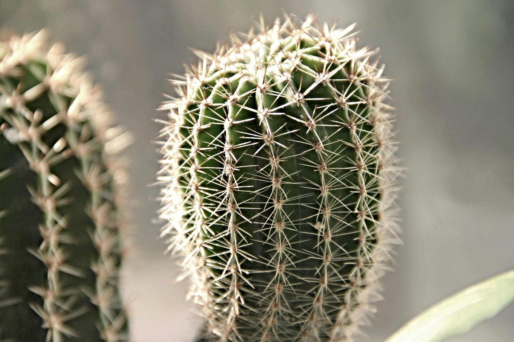
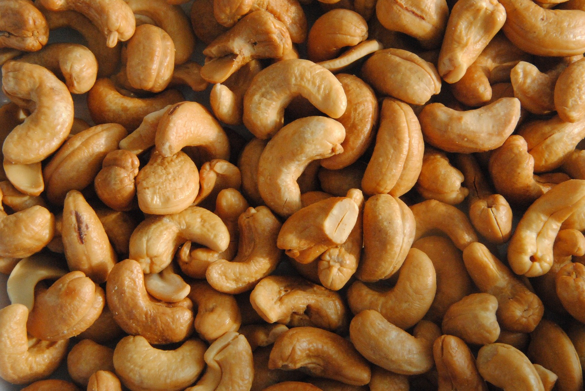

Economic Crops

cassava
一些示例文本。一些示例文本。

natural rubber
一些示例文本。一些示例文本。

cactus
一些示例文本。一些示例文本。

sugarcane
一些示例文本。一些示例文本。
Oil Crops

oil palm
一些示例文本。一些示例文本。
coconu
一些示例文本。一些示例文本。

Camellia oleifera
一些示例文本。一些示例文本。

cashew
一些示例文本。一些示例文本。
Bioinformatics tools


The GDS aims to be the leading platform providing omics data and tools for researchers, as well as breeding data and tools for breeders. We offered a series online bioinformatics tools, hoping to deal with some key issues in the whole industry chain in strawberry. In the near future, we will continue to update this database as long as we can.
The only comprehensive database focusing on strawberry plants. We collected 8 species up to 2021.
- Newest Data
8 species of strawberries with latest versions
- Useful Tools
BLAST, JBrowse, Gene search, Synteny etc.
- Easy to handle
Welcome to send us your suggestions or data.
(2021-05-20) Version 1.0 of GDS released!
(2021-03-18) Gene search data were added into GDS.
(2020-12-08) BLAST and JBrowse tools were implemented!
(2020-09-28) GDS: an omics database for strawberry plants started!
DB URL: http://eplant.njau.edu.cn/strawberry
Please don't forget to cite GDS in your papers (not just in supplemental). Citations (and tweets, mentions in talks etc) really help us get funding to continue developing the database.
A manuscript entitled "GDS: A Genome Database for Strawberries" has been submitted to the journal for peer review.